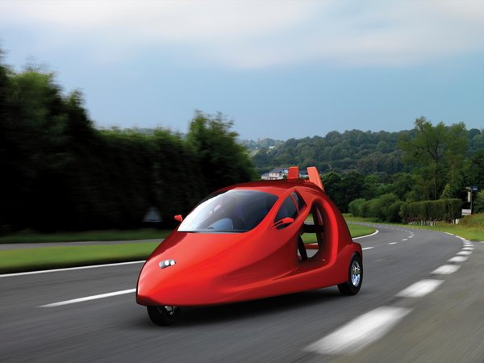
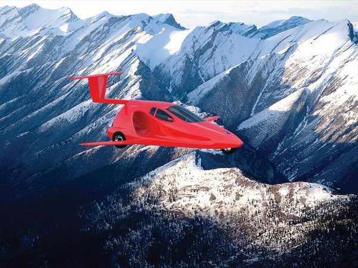

the fucture cars is already here

The automotive industry is experiencing the biggest upheaval in its history. Pascal Brier, Altran Group Executive Vice-President, sheds light on the four major trends for the car of the future: electric, autonomous, connected, and with a completely new architecture.
where are the car fly

cars are becoming a separate place for service consumption.A technological tsunami has been upturning the automotive industry over the last decade. Traditional patterns have been exploding as the digital revolution leads to reinventing all the hardware and software architecture on vehicles. It may well be that in a few years’ time, a car will look nothing like it does today.